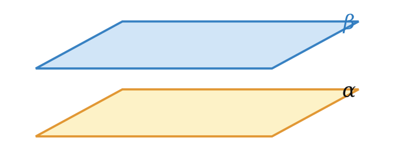
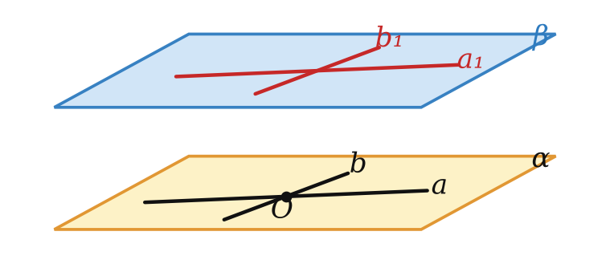
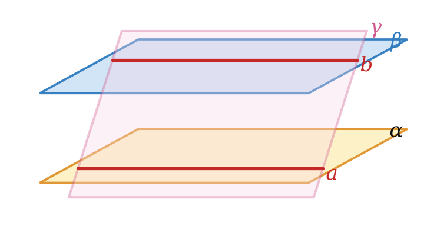
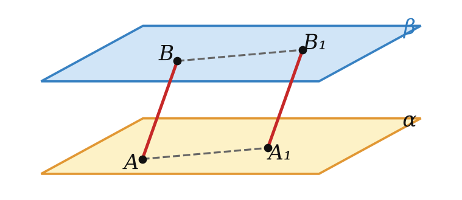
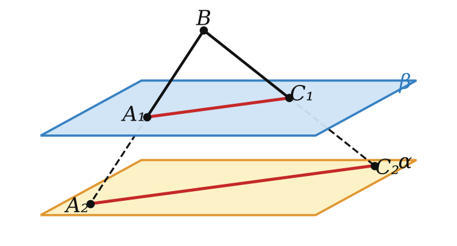
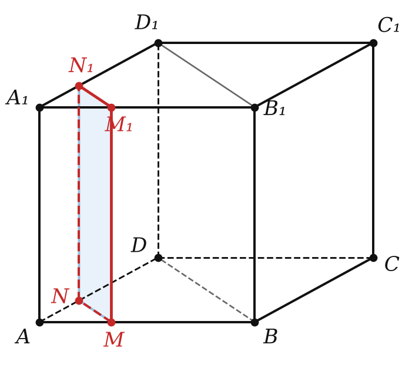

Теория
Две плоскости: пересекаются или параллельны
Две плоскости могут иметь общие точки — тогда по аксиоме А5 они пересекаются по прямой. А могут не иметь ни одной общей точки: пол и потолок комнаты, дно аквариума и поверхность воды в нём, основания призмы.
Две плоскости называют параллельными, если они не имеют общих точек. Обозначение: α ∥ β.

Сразу полезное свойство: любая прямая, лежащая в одной из двух параллельных плоскостей, параллельна другой плоскости. Действительно, общая точка прямой и второй плоскости была бы общей точкой самих плоскостей.
Два многоугольника называют параллельными, если они лежат в параллельных плоскостях (например, противоположные грани прямоугольного параллелепипеда).
Признак параллельности плоскостей
Если две пересекающиеся прямые одной плоскости соответственно параллельны двум прямым другой плоскости, то эти плоскости параллельны.

Пусть a и b лежат в α и пересекаются, a₁ и b₁ лежат в β, a ∥ a₁, b ∥ b₁. Допустим, плоскости пересекаются по прямой c.
1) a ∥ a₁, где a₁ ⊂ β, и a не лежит в β — по признаку 5.1 a ∥ β.
2) Плоскость α проходит через a и пересекает β по c. По теореме 5.2 a ∥ c. Точно так же b ∥ c.
3) Получилось: в плоскости α через точку пересечения a и b проходят две разные прямые, параллельные c. Это противоречит аксиоме параллельных. Значит, α ∥ β. ∎
Прямые в первой плоскости должны быть пересекающимися. Если взять две параллельные прямые, признак не работает: две «соседние стены» комнаты содержат параллельные вертикальные рёбра, но сами стены пересекаются.
Если две пересекающиеся прямые одной плоскости параллельны другой плоскости, то эти плоскости параллельны.
Пример: в прямоугольном параллелепипеде AA₁ ∥ DD₁ и AB ∥ DC, прямые AA₁ и AB пересекаются, поэтому грани AA₁B₁B и DD₁C₁C параллельны.
Свойства параллельных плоскостей
Через точку пространства, не лежащую в данной плоскости, проходит плоскость, параллельная данной, и притом только одна.
Существование. В плоскости α проведём пересекающиеся прямые a и b, а через точку A — прямые a₁ ∥ a и b₁ ∥ b. Плоскость β через a₁ и b₁ параллельна α по признаку 6.1.
Единственность. Пусть есть ещё плоскость β₁ ∥ α через A. Плоскости β и β₁ пересекаются по прямой c (у них общая точка A). Прямая a параллельна и β, и β₁ (лежит в α), поэтому a ∥ c (ключевая задача § 5). Так же b ∥ c. Тогда a ∥ b (теорема 5.4), а они пересекаются. Противоречие. ∎
Если прямая пересекает одну из двух параллельных плоскостей, то она пересекает и другую.
Все прямые, проходящие через данную точку вне плоскости и параллельные этой плоскости, лежат в одной плоскости — параллельной данной.
Прямые пересечения двух параллельных плоскостей третьей плоскостью параллельны.

Прямые a и b лежат в одной плоскости γ, значит, пересекаются или параллельны. Общая точка прямых была бы общей точкой плоскостей α и β, а их нет. Значит, a ∥ b. ∎
Это главная теорема для сечений: секущая плоскость режет две параллельные грани по параллельным отрезкам.
Отрезки параллельных прямых, заключённые между двумя параллельными плоскостями, равны.

Параллельные прямые AB и A₁B₁ задают плоскость, которая пересекает α и β по прямым AA₁ и BB₁. По теореме 6.3 AA₁ ∥ BB₁. Значит, AA₁B₁B — параллелограмм (противоположные стороны попарно параллельны), и AB = A₁B₁. ∎
Разбор примеров

Параллельные плоскости α и β пересекают сторону BA угла ABC в точках A₁ и A₂, а сторону BC — в точках C₁ и C₂. BA₁ = 4, A₁A₂ = 6, A₁C₁ = 6. Найдите A₂C₂.
Плоскость угла пересекает параллельные плоскости по прямым A₁C₁ и A₂C₂, по теореме 6.3 они параллельны. Значит, △BA₁C₁ ∼ △BA₂C₂ с коэффициентом BA₂ : BA₁ = 10 : 4. A₂C₂ = 6 · 10/4 = 15.

Ребро куба ABCDA₁B₁C₁D₁ равно 6, точка M на ребре AB, AM = 2. Постройте сечение куба плоскостью, проходящей через M параллельно плоскости BB₁D₁D, и найдите его периметр.
1) Нижняя грань пересекает параллельные плоскости по параллельным прямым (6.3): через M проводим MN ∥ BD, N ∈ AD. Так же в боковых гранях: MM₁ ∥ BB₁ и NN₁ ∥ DD₁, в верхней — M₁N₁ ∥ B₁D₁. Сечение — прямоугольник MNN₁M₁.
2) △AMN — равнобедренный прямоугольный (MN ∥ BD), AN = AM = 2, MN = 2√2. MM₁ = 6. Периметр = 2(2√2 + 6) = 12 + 4√2.
Плоскости α ∥ β. Точки A, B лежат в α, точки C, D — в β, отрезки AC и BD пересекаются в точке O. AO = 4, OC = 6, AB = 10. Найдите CD.
Пересекающиеся прямые AC и BD задают плоскость (теорема 2.2), она пересекает α и β по прямым AB и CD. По 6.3 AB ∥ CD. Треугольники AOB и COD подобны (накрест лежащие углы): CD = AB · OC/AO = 10 · 6/4 = 15.
Во всех задачах урока сначала обоснуй параллельность (по теореме 6.3), и только потом пиши подобие. «Видно по рисунку» — не довод: рисунок в пространстве обманывает.
Задачи урока
Реши в тетради, к каждой задаче — чертёж. Разберём на занятии.
Тест к уроку
Домашнее задание
Задачи Д1–Д6 ниже, к каждой — рисунок. Из учебника: № 6.1, 6.4, 6.12, 6.16. Выучить признак 6.1 с доказательством, теоремы 6.2 и 6.3, ключевую задачу о равных отрезках.